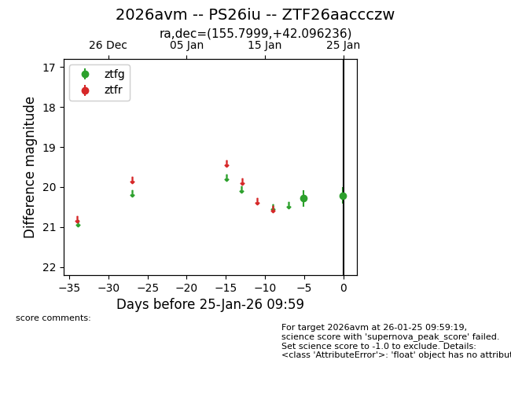
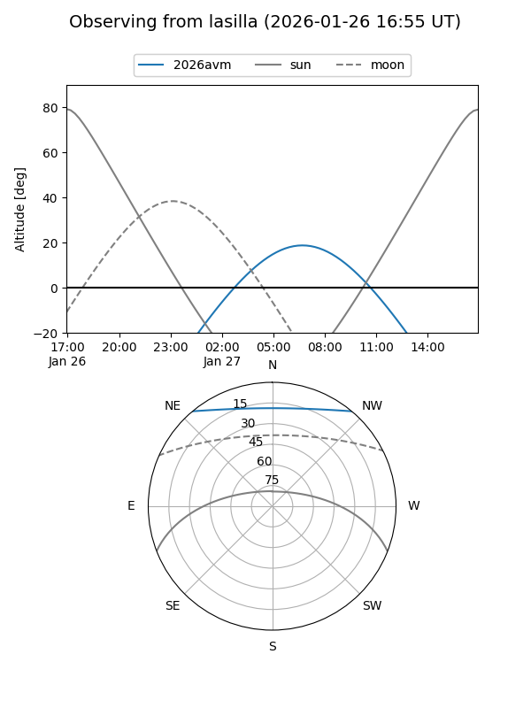
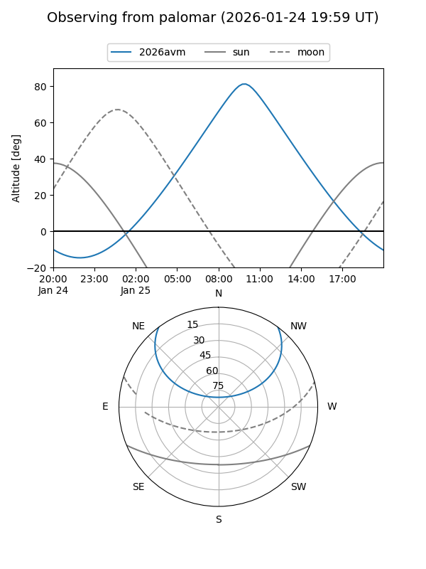

2026avm
Target 2026avm at 2026-01-25 10:01
Aliases and brokers:
FINK: link
Lasair: link
ALeRCE: link
TNS: link
YSE: link
alt names
ZTF26aaccczw (ztf,fink_ztf)
2026avm (tns,yse)
PS26iu (panstarrs)
Coordinates:
equatorial (ra, dec) = 155.7999,+42.09624
equatorial (HMS+DMS) = 10:23:11.97,+42:05:46.45
galactic (l, b) = (176.7870,+56.37479)
Flags:
Photometry:
last ztfg=20.21
2 ztfg detections
Lightcurve

Visibility


Additional plots